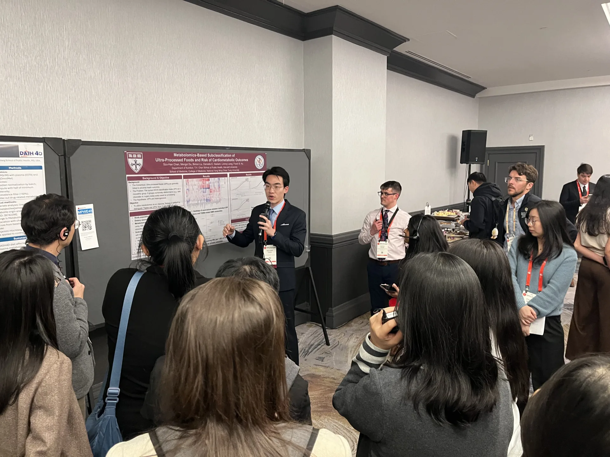

2026 AHA EPI | Lifestyle Scientific Sessions（2026/3/15–3/21）於波士頓舉行，主題聚焦於 epidemiology, lifestyle, and cardiometabolic health。
感謝我在哈佛的指導老師 Prof. Frank B. Hu 鼓勵我參與這場與我們研究方向高度相關的會議；也特別感謝我的導師鄭浩民教授全力支持，並協助將團隊近期的研究成果整理投稿。
這次會議的幾項收穫：
1. 我們投稿的三篇摘要中，有兩篇獲選 moderated poster，由領域教授主持帶領現場討論。
2. 我去年於哈佛完成的研究獲得本會 Paul Dudley White International Scholar Award，並在 omics session 的討論中得到熱烈回饋。
3. 鄭老師帶領、關於中心型肥胖與心臟衰竭風險的研究，獲得 AHA 官方媒體、Medical News Today、Medscape 等媒體報導。根據 AHA 最終媒體追蹤報告，這項研究後續累積 217 則報導與 558,935,079 impressions，也讓陽明與臺灣的研究能見度被更多國際讀者看見。
4. 趁此次研討會於波士頓舉辦的機會，與 Drs. Frank Hu, Qi Sun, Binkai, Mengxi, Danielle, Tong, Kenny, Xinxiu, Han, Siyue 等多位老師與朋友再度交流。明年 AHA EPI|Lifestyle 以及總會亦將在波士頓舉行，期待延續這份連結。
5. 也將鄭浩民教授團隊的研究動能介紹給多位國際學者，促成數條未來可能的合作方向。
「Perseverance and grit.」——鄭浩民教授
